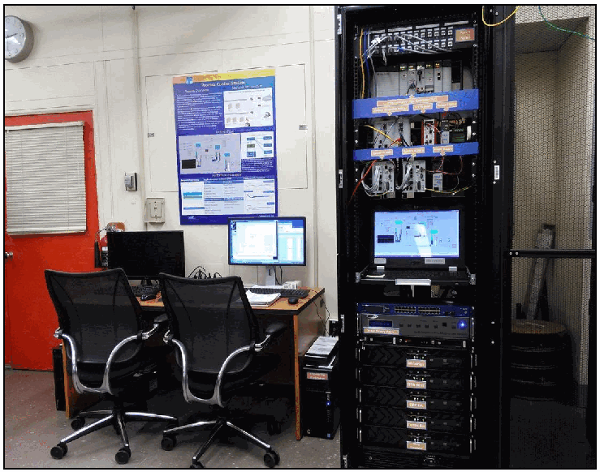

NIST IR 8188 日本語訳
英語タイトル : Key Performance Indicators for Process Control System Cybersecurity Performance Analysis日本語タイトル : プロセス制御システムのサイバーセキュリティ性能分析のための主要業績評価指標
公開日 : 2017-08-03
原文URL : https://csrc.nist.gov/pubs/ir/8188/final
翻訳編集 : 自動生成（有志による非公式の日本語訳）, 原文取得日 : 2026-10-31, 訳文 : 149 / 151 ブロック
[要約] NIST IR 8188 は、NIST が構築したサイバーセキュリティ技術の性能影響を測るテストベッド（CSMS テストベッド）のうち、プロセス制御システムを対象とした報告書です。このシステムは、Tennessee Eastman チャレンジ問題を化学反応のシミュレーションモデルとし、PLC や産業用ネットワークスイッチを制御ループに用いて、連続化学製造システムを模擬するものと説明されています。システムやそのサブシステムの性能を測る主要業績評価指標（KPI）を定義し、サブシステムごとの測定方法を説明します。KPI は、追加のサイバーセキュリティ対策を実装しないベースライン測定で算出し、対策を実装した後の実験で再び算出して比較することで、性能への影響を分析できるとしています。
NISTIR 8188
NISTIR 8188
Key Performance Indicators for Process Control System Cybersecurity Performance Analysis
プロセス制御システムのサイバーセキュリティ性能分析のための主要業績評価指標
CheeYee Tang
CheeYee Tang
This publication is available free of charge from:
https://doi.org/10.6028/NIST.IR.8188
この刊行物は次の場所から無料で入手できます:
https://doi.org/10.6028/NIST.IR.8188
［NIST のロゴ。公的な標章のため、この非公式サイトには掲載していません。原本 PDF を参照してください。］
NISTIR 8188
NISTIR 8188
Key Performance Indicators for Process Control System Cybersecurity Performance Analysis
プロセス制御システムのサイバーセキュリティ性能分析のための主要業績評価指標
CheeYee Tang
Intelligent Systems Division
Engineering Laboratory
CheeYee Tang
インテリジェントシステム部門
工学研究所
This publication is available free of charge from:
https://doi.org/10.6028/NIST.IR.8188
この刊行物は次の場所から無料で入手できます:
https://doi.org/10.6028/NIST.IR.8188
August 2017
2017 年 8 月
U.S. Department of Commerce
Wilbur L. Ross, Jr., Secretary
米国商務省
Wilbur L. Ross, Jr. 長官
National Institute of Standards and Technology
Kent Rochford, Acting NIST Director and Under Secretary of Commerce for Standards and Technology
米国国立標準技術研究所
Kent Rochford、NIST 所長代行兼商務次官（標準・技術担当）代行
Contents
目次
Contents
目次
List of Figures
図の一覧
List of Tables
表の一覧
1. Introduction
1. はじめに
The National Institute of Standards and Technology has constructed a testbed to measure the performance impact induced by cybersecurity technologies on Industrial Control Systems (ICS) [1]. The Cybersecurity for Smart Manufacturing Systems (CSMS) Testbed emulates real-world manufacturing processes and their industrial control systems by using software simulators and commercial control hardware in the laboratory environment.
米国国立標準技術研究所は、サイバーセキュリティ技術が産業用制御システム（ICS）に及ぼす性能への影響を測定するためのテストベッドを構築しました [1]。スマート製造システムのためのサイバーセキュリティ（CSMS）テストベッドは、実験室環境で、ソフトウェアシミュレーターと市販の制御用ハードウェアを使用して、実世界の製造プロセスとその産業用制御システムを模擬します。
This report focuses on the Process Control System of the Testbed, one of the four systems1 within the CSMS Testbed.
本報告書は、CSMS テストベッドにある 4 つのシステム1の一つである、テストベッドのプロセス制御システムに焦点を当てます。
The Process Control System emulates an industrial continuous manufacturing system, a manufacturing process to produce or process materials continuously, where the materials are moving, going through chemical reactions, or undergoing mechanical or thermal treatment continuously. Continuous manufacturing usually implies a 24x7 operation with infrequent maintenance shutdowns and is contrasted with batch manufacturing. Examples of continuous manufacturing systems include chemical production, oil refining, natural gas processing, and waste water treatment.
プロセス制御システムは、産業用の連続製造システムを模擬します。これは、材料を連続的に生産または処理する製造プロセスであり、材料が移動し、化学反応を経て、あるいは機械的または熱的な処理を連続的に受けます。連続製造は、通常、保守のための停止がまれな 24 時間 365 日の運用を意味し、バッチ製造と対比されます。連続製造システムの例には、化学品の生産、石油精製、天然ガス処理、廃水処理があります。
The Process Control System uses the Tennessee Eastman challenge problem [2], a real-world industrial chemical manufacturing process, as the simulation model for the chemical reaction. The system integrates the control algorithm developed by Ricker [3] to control the simulated chemical reaction. With the use of widely deployed industrial hardware like programmable logic controllers (PLCs) and industrial network switches as part of the control loop, this system emulates a complete setup of a continuous chemical manufacturing system.
プロセス制御システムは、化学反応のシミュレーションモデルとして、実世界の産業用化学製造プロセスである Tennessee Eastman チャレンジ問題 [2] を使用します。このシステムは、模擬の化学反応を制御するために、Ricker [3] が開発した制御アルゴリズムを統合しています。プログラマブルロジックコントローラー（PLC）や産業用ネットワークスイッチなど、広く展開されている産業用ハードウェアを制御ループの一部として使用することで、このシステムは、連続化学製造システムの完全な構成を模擬します。
This hardware-in-the-loop setup allows the testbed to measure the performance of the manufacturing system using real-world industrial hardware devices, while the chemical manufacturing process is simulated in software.
このハードウェアインザループの構成により、テストベッドは、化学製造プロセスをソフトウェアでシミュレートしながら、実世界の産業用ハードウェア機器を使用して製造システムの性能を測定できます。
This system employs a modular design which allows a greater flexibility for re-configuration and scalability. The major sub-systems and components are largely independent and have well-defined interfaces, leading to a greater flexibility to change the individual sub-systems, like the continuous manufacturing process simulation, the network topologies, or the industrial communication protocol. This allows the researcher to investigate a wide range of different settings of industrial manufacturing systems, and to study the impacts of the implementation of cybersecurity technologies on the system performance and operation.
このシステムはモジュール設計を採用しており、再構成と拡張性の柔軟性が高まります。主要なサブシステムとコンポーネントはほぼ独立しており、明確に定義されたインターフェースを持つため、連続製造プロセスのシミュレーション、ネットワークトポロジー、産業用通信プロトコルなど、個々のサブシステムを変更する柔軟性が高くなります。これにより、研究者は、産業用製造システムのさまざまな設定を幅広く調査し、サイバーセキュリティ技術の実装がシステムの性能と運用に及ぼす影響を研究できます。
This report describes the Key Performance Indicators (KPI) and the measurement methodologies being used to measure the performance of the Process Control System.
本報告書は、プロセス制御システムの性能を測定するために使用している主要業績評価指標（KPI）と測定方法を説明します。
2. Process Control System
2. プロセス制御システム
The Process Control System2 includes a software simulator to emulate the Tennessee Eastman chemical reaction process. The simulator is written in C code and is executed on a Windows 7 based computer. In addition, the system includes a Programmable Logic Controller (PLC), a software controller implemented in MATLAB, a human-machine interface (HMI), an Object Linking and Embedding for Process Control (OPC) Data Access (DA) server, a Data Historian, an engineering workstation, and several virtual Local Area Network (LAN) switches and network routers. The Process Control System is housed in a 19-inch rack system as shown in Figure 1.
プロセス制御システム2には、Tennessee Eastman 化学反応プロセスを模擬するソフトウェアシミュレーターが含まれます。このシミュレーターは C コードで書かれており、Windows 7 を実行するコンピューター上で動作します。さらに、このシステムには、プログラマブルロジックコントローラー（PLC）、MATLAB で実装されたソフトウェアコントローラー、ヒューマンマシンインターフェース（HMI）、プロセス制御用オブジェクトリンクと埋め込み（OPC）データアクセス（DA）サーバー、データヒストリアン、エンジニアリングワークステーション、および複数の仮想ローカルエリアネットワーク（LAN）スイッチとネットワークルーターが含まれます。プロセス制御システムは、図 1 に示すように 19 インチラックシステムに収容されています。

実験室にあるプロセス制御システムの写真です。黒い19インチのラックにネットワークスイッチ、制御装置、ラックに組み込まれたモニター、コンピューターが収められ、その隣にオフィスチェア2脚、モニター、キーボードを置いた机があります。壁にはポスターが掛かっています。
Figure 1 - View of the Process Control System
図 1 - プロセス制御システムの外観
2.1. The Chemical Process Model (Plant Simulator)
2.1. 化学プロセスモデル（プラントシミュレーター）
The Process Control System uses the Tennessee Eastman challenge problem as the simulation model. The Tennessee Eastman problem, presented by Downs and Vogel [2], is a well-known process control problem in continuous chemical manufacturing. The model consists of five major units: a reactor, a product condenser, a vapor-liquid separator, a recycle compressor, and a product stripper for producing the desired end products. The model has 12 actuators for control and 41 sensors for monitoring.
プロセス制御システムは、シミュレーションモデルとして Tennessee Eastman チャレンジ問題を使用します。Downs と Vogel [2] が示した Tennessee Eastman 問題は、連続化学製造における、よく知られたプロセス制御問題です。このモデルは、目的の最終製品を生産するための 5 つの主要なユニット、すなわち反応器、製品凝縮器、気液分離器、リサイクル圧縮機、製品ストリッパーで構成されます。このモデルには、制御用のアクチュエーターが 12 個、監視用のセンサーが 41 個あります。
The model is described in detail in [2], and the process description is summarized as follows: The continuous process produces two products from four input reactants. The process is irreversible and exothermic. The reaction rates of the reactants are a function of the reactor temperature. The gaseous reactants are combined in the reactor to form liquid products. The reactor temperature is cooled using an internal cooling bundle. The reactor product passes through the condenser to the separator. The vapor-liquid separator then separates unreacted gases from the liquid products. The unreacted gases are sent back to the reactor by the recycle compressor. The remaining reactants are removed in a stripping column. The two end products are sent downstream for further refining and separation. The process model is shown in Figure 2.
モデルの詳細は [2] に記載されており、プロセスの説明は次のように要約されます。この連続プロセスは、4 つの入力反応物から 2 つの製品を生産します。このプロセスは不可逆で、発熱を伴います。反応物の反応速度は、反応器の温度の関数です。気体の反応物は反応器で結合して、液体の製品を形成します。反応器の温度は、内部の冷却管束で冷却されます。反応器の生成物は、凝縮器を通って分離器に送られます。次に、気液分離器が、未反応の気体を液体の製品から分離します。未反応の気体は、リサイクル圧縮機によって反応器に送り返されます。残りの反応物は、ストリッピング塔で除去されます。2 つの最終製品は、さらなる精製と分離のために下流に送られます。プロセスモデルを図 2 に示します。
The Plant Simulator is implemented in C code, which was based on the Fortran code originally developed by Downs and Vogel.
プラントシミュレーターは C コードで実装されており、これは Downs と Vogel が当初開発した Fortran コードに基づいています。
［第三者の画像。第三者の著作物のため、この非公式サイトには掲載していません。原本 PDF を参照してください。］
Figure 2 - Tennessee Eastman Process Model [2]
図 2 - Tennessee Eastman プロセスモデル [2]
2.2. Process Control System Operation
2.2. プロセス制御システムの運用
The Plant Simulator requires a controller to provide a control loop in order to operate continuously. A decentralized controller implemented in Simulink, developed by Ricker [3], is used as the process controller. The Ricker implementation matches the Plant Simulator accurately, and the controller is a separate software process that runs on a separate computer from the Plant Simulator.
プラントシミュレーターは、連続的に動作するために、制御ループを提供するコントローラーを必要とします。プロセスコントローラーとしては、Ricker [3] が開発した、Simulink で実装された分散型コントローラーを使用します。Ricker の実装はプラントシミュレーターと正確に一致し、このコントローラーは、プラントシミュレーターとは別のコンピューター上で動作する、独立したソフトウェアプロセスです。
To provide communication between the Plant Simulator and the Controller, a hardware Programmable Logic Controller (PLC) with industrial network protocol capability is used. The industrial protocol is used to communicate between the Plant Simulator and the PLC. The Plant Simulator sends its sensor information to the Controller, and the Controller algorithm uses the sensor inputs to compute the desired values of the actuators and sends them back to the Plant Simulator.
プラントシミュレーターとコントローラーの間の通信を提供するために、産業用ネットワークプロトコルの機能を備えたハードウェアのプログラマブルロジックコントローラー（PLC）を使用します。産業用プロトコルは、プラントシミュレーターと PLC の間の通信に使用されます。プラントシミュレーターはセンサー情報をコントローラーに送り、コントローラーのアルゴリズムは、そのセンサー入力を使ってアクチュエーターの目標値を計算し、プラントシミュレーターに送り返します。
In the Plant Simulator computer, a multi-node DeviceNet card was installed. DeviceNet is a common industrial protocol used in the automation industry to exchange data between control devices. The multi-node card allows a single hardware device to emulate multiple virtual DeviceNet nodes. In our case, each sensor and actuator point is a dedicated node. Therefore, 53 virtual nodes (41 for sensors and 12 for actuators) were configured in the system. A software interface was developed to send and receive sensor and actuator values between the Plant Simulator and the PLC through DeviceNet.
プラントシミュレーターのコンピューターには、マルチノードの DeviceNet カードを取り付けました。DeviceNet は、オートメーション業界で制御機器間のデータ交換に使われる、一般的な産業用プロトコルです。マルチノードカードにより、1 つのハードウェア機器で複数の仮想 DeviceNet ノードを模擬できます。この構成では、センサーとアクチュエーターの各ポイントが専用のノードです。したがって、システムには 53 個の仮想ノード（センサー用 41 個、アクチュエーター用 12 個）を構成しました。DeviceNet を介してプラントシミュレーターと PLC の間でセンサーとアクチュエーターの値を送受信するために、ソフトウェアインターフェースを開発しました。
An OPC DA Server is running in a Windows 7 computer, acting as the main data gateway for the PLC. The PLC communicates to the OPC DA server to update and retrieve all the sensor and actuator information, respectively. This sensor and actuator information is also known as a “tag” in PLC terminology. The Controller has a MATLAB Simulink interface that communicates with the OPC DA server directly.
OPC DA サーバーは Windows 7 のコンピューターで動作しており、PLC の主要なデータゲートウェイとして機能します。PLC は OPC DA サーバーと通信して、すべてのセンサーとアクチュエーターの情報をそれぞれ更新し、取得します。このセンサーとアクチュエーターの情報は、PLC の用語では「タグ」としても知られています。コントローラーには、OPC DA サーバーと直接通信する MATLAB Simulink インターフェースがあります。
The communication data flow is described in more detail in Section 2.4.
通信のデータフローについては、第 2.4 節でさらに詳しく説明します。
A Human-Machine Interface (HMI) and a Data Historian are implemented in the system. The HMI provides a graphical user interface to present information to an operator or user about the state of the process. The HMI screen is shown in Figure 4. The Data Historian serves as the main database to record all the process sensor and actuator information. Both HMI and Data Historian have built-in interfaces to establish connections to the OPC DA to access all the process information.
システムには、ヒューマンマシンインターフェース（HMI）とデータヒストリアンが実装されています。HMI は、プロセスの状態に関する情報をオペレーターやユーザーに提示するグラフィカルユーザーインターフェースを提供します。HMI の画面を図 4 に示します。データヒストリアンは、プロセスのすべてのセンサーとアクチュエーターの情報を記録する主要なデータベースとして機能します。HMI とデータヒストリアンはいずれも、すべてのプロセス情報にアクセスするために OPC DA への接続を確立する組み込みのインターフェースを備えています。
An engineering workstation is used in the system for engineering support, such as PLC development and control, HMI development and deployment, and Data Historian data retrieval.
システムでは、PLC の開発と制御、HMI の開発と展開、データヒストリアンのデータ取得など、エンジニアリング支援のためにエンジニアリングワークステーションを使用します。
2.3. Network Architecture
2.3. ネットワークアーキテクチャ
The Process Control System network is segmented from the main Testbed network by a boundary router. The router is using a dynamic routing protocol, Open Shortest Path First (OSPF), to communicate with the main tested router. The network architecture is shown in Figure 3.
プロセス制御システムのネットワークは、境界ルーターによってテストベッドのメインネットワークから分離されています。このルーターは、メインのテストベッドのルーターと通信するために、動的ルーティングプロトコルである Open Shortest Path First（OSPF）を使用しています。ネットワークアーキテクチャを図 3 に示します。
All network traffic needs to go through the boundary router to access the main testbed network.
すべてのネットワークトラフィックは、テストベッドのメインネットワークにアクセスするために、境界ルーターを通過する必要があります。
There are two virtual network segments in the system. Each network is managed by an Ethernet switch. The HMI and the Controller are in virtual network VLAN-1, while the Plant Simulator, Data Historian, OPC DA Server, and PLC are in virtual network VLAN-2.
システムには 2 つの仮想ネットワークセグメントがあります。各ネットワークは Ethernet スイッチによって管理されています。HMI とコントローラーは仮想ネットワーク VLAN-1 にあり、プラントシミュレーター、データヒストリアン、OPC DA サーバー、PLC は仮想ネットワーク VLAN-2 にあります。
VLAN-1 simulates a central control room environment that the HMI and the controllers are virtually located in the same network segment. VLAN-2 simulates the process operation environment which typically consists of the operating plant, PLCs, OPC server, and the Data Historian.
VLAN-1 は、HMI とコントローラーが仮想的に同じネットワークセグメントにある、中央制御室の環境を模擬します。VLAN-2 は、通常は稼働中のプラント、PLC、OPC サーバー、データヒストリアンで構成される、プロセス運用の環境を模擬します。
These network switches and routers are highly reconfigurable, and therefore, allow the system to implement various network topologies for performance testing.
これらのネットワークスイッチとルーターは高い再構成能力を備えているため、システムでは、性能試験のためにさまざまなネットワークトポロジーを実装できます。
A Tofino Xenon security appliance, a firewall specially designed for industrial control system application, is installed to protect the PLC. The firewall rules are configured to only allow certain network nodes and specific protocols to access the PLC, and deny all other traffic.
プロセス制御システムでは、PLC を保護するために、産業用制御システム向けに特別に設計されたファイアウォールである Tofino Xenon セキュリティアプライアンスを設置しています。ファイアウォールのルールは、特定のネットワークノードと特定のプロトコルのみが PLC にアクセスできるようにし、それ以外のすべてのトラフィックを拒否するように構成されています。
All the computer nodes in the system have the Windows firewall enabled. Rules are configured to only allow traffic specific to their applications to access these computers. For example, the firewall of the OPC Server computer only allows a restricted range of Remote Procedure Call (RPC) and Distributed Component Object Model (DCOM) ports for the OPC clients to access, and restricts the source Internet Protocol (IP) address of the OPC clients.
システムのすべてのコンピューターノードで、Windows ファイアウォールが有効になっています。ルールは、各コンピューターのアプリケーションに固有のトラフィックのみがこれらのコンピューターにアクセスできるように構成されています。たとえば、OPC サーバーのコンピューターのファイアウォールは、OPC クライアントがアクセスするためのリモートプロシージャコール（RPC）と分散コンポーネントオブジェクトモデル（DCOM）のポートを限られた範囲だけに許可し、OPC クライアントの送信元インターネットプロトコル（IP）アドレスを制限します。
The main Testbed network provides a Network Time Protocol (NTP) server. All systems in the Process Control System are synchronized with the Testbed NTP server.
テストベッドのメインネットワークは、ネットワークタイムプロトコル（NTP）サーバーを提供します。プロセス制御システムのすべてのシステムは、テストベッドの NTP サーバーと同期しています。
A network packet analyzer tool is installed in all the computers in the system to capture and analyze network packets. Other specialized software tools are also used to monitor the system. For example, an OPC data analyzer is used to monitor OPC data exchange, and DeviceNet logging is used to log DeviceNet level traffic.
ネットワークパケットを捕捉して分析するために、システム内のすべてのコンピューターにネットワークパケットアナライザーツールがインストールされています。システムの監視には、その他の専用ソフトウェアツールも使われます。たとえば、OPC データの交換を監視するために OPC データアナライザーが、DeviceNet レベルのトラフィックを記録するために DeviceNet ロギングが使われます。
![Network diagram titled "Process Control System Network Diagram". "System VLAN 1" connects the "HMI Host" and the "Controller" (both "Intel Core i5 Win7") to a "Layer 2 switch, Allen-Bradley Stratix 5700". "System VLAN 2" connects the "Plant Simulator", "Historian" and "OPC DA" (all "Intel Core i5 Win7") to a second "Layer 2 switch, Allen-Bradley Stratix 5700", and also connects through an "ICS Firewall, Tofino Xenon" to the "PLC, Allen-Bradley". A dashed "DeviceNet Connection" links the Plant Simulator and the PLC. Both switches connect to the "System Boundary Router, Allen-Bradley Stratix 8300", which connects to the "Corporate Router/Firewall, Cisco ASA 5512-X" leading to the "NIST Research Equipment Network" cloud, and to the "Engineering Workstation, HP Z230".](assets/ir-8188/p0009-figure-01.png)
「Process Control System Network Diagram」（プロセス制御システムのネットワーク構成図）と題した図です。「System VLAN 1」には「HMI Host」と「Controller」（いずれも「Intel Core i5 Win7」）がつながり、「Layer 2 switch, Allen-Bradley Stratix 5700」に接続しています。「System VLAN 2」には「Plant Simulator」「Historian」「OPC DA」（いずれも「Intel Core i5 Win7」）がつながって2台目の「Layer 2 switch, Allen-Bradley Stratix 5700」に接続し、さらに「ICS Firewall, Tofino Xenon」を経て「PLC, Allen-Bradley」に接続しています。Plant Simulator と PLC の間は破線の「DeviceNet Connection」で結ばれています。2台のスイッチは「System Boundary Router, Allen-Bradley Stratix 8300」に接続し、このルーターは「Corporate Router/Firewall, Cisco ASA 5512-X」を経て雲形の「NIST Research Equipment Network」に、また「Engineering Workstation, HP Z230」に接続しています。
Figure 3 - Network Architecture Diagram
図 3 - ネットワークアーキテクチャ図
2.4. Process and Data Flow
2.4. プロセスとデータの流れ
Figure 4 shows the HMI view of the Process Control System. The HMI displays the process information in a graphical interface to allow the operator to easily monitor. The HMI can also alert the operator. For example, if the reactor pressure is above the predefined threshold, the reactor icon will flash red.
図 4 に、プロセス制御システムの HMI の画面を示します。HMI は、オペレーターが容易に監視できるよう、プロセス情報をグラフィカルなインターフェースで表示します。HMI は、オペレーターに警告することもできます。たとえば、反応器の圧力が事前に定義したしきい値を超えると、反応器のアイコンが赤く点滅します。
The Process Control System is initialized in four stages: Stage one is the initialization of application software. In this stage, the OPC DA server, HMI, Data Historian, and the MATLAB Controller are executed and initialized. Stage two is the initialization of the hardware devices. In this stage, the configuration file of the multi-node DeviceNet card and the PLC are loaded and the devices enter run mode waiting for data input. Stage three is the industrial network activation stage. In this stage, the Plant Simulator is activated and all the sensor and actuator nodes are connected to the PLC. The last stage is the simulation start stage. In this stage, the Plant Simulator and Controller are started and all the sub-systems enter run mode.
プロセス制御システムは、4 つの段階で初期化されます。第 1 段階は、アプリケーションソフトウェアの初期化です。この段階で、OPC DA サーバー、HMI、データヒストリアン、MATLAB コントローラーが実行され、初期化されます。第 2 段階は、ハードウェア機器の初期化です。この段階で、マルチノード DeviceNet カードと PLC の構成ファイルが読み込まれ、機器は実行モードに入ってデータ入力を待ちます。第 3 段階は、産業用ネットワークの有効化の段階です。この段階で、プラントシミュレーターが有効になり、すべてのセンサーとアクチュエーターのノードが PLC に接続されます。最後の段階は、シミュレーションの開始段階です。この段階で、プラントシミュレーターとコントローラーが開始され、すべてのサブシステムが実行モードに入ります。
Once in the run mode, the Plant Simulator will start sending and receiving sensor and actuator values to and from the PLC. The OPC server polls the PLC at a data rate of 10Hz to exchange sensor and actuator values. The OPC server will send updated sensor values to the subscribing clients, namely, the Controller, HMI, and Data Historian. The OPC server operates in exception-report mode, meaning it will only send updates to clients when the data changes. When the Controller receives sensor values, it runs through the control algorithm and computes the desired actuator values and sends them back to the OPC server. The OPC server will send the updated actuator values to the PLC during the next poll cycle. The DeviceNet interface will poll the PLC periodically for the latest actuator values and sends them to the Plant Simulator.
実行モードに入ると、プラントシミュレーターは、PLC との間でセンサーとアクチュエーターの値の送受信を開始します。OPC サーバーは、センサーとアクチュエーターの値を交換するために、10Hz のデータレートで PLC をポーリングします。OPC サーバーは、更新されたセンサーの値を、サブスクライブしているクライアント、すなわちコントローラー、HMI、データヒストリアンに送信します。OPC サーバーは例外報告モードで動作します。つまり、データが変化したときだけクライアントに更新を送信します。コントローラーは、センサーの値を受け取ると、制御アルゴリズムを実行してアクチュエーターの目標値を計算し、OPC サーバーに送り返します。OPC サーバーは、更新されたアクチュエーターの値を、次のポーリングサイクルで PLC に送信します。DeviceNet インターフェースは、最新のアクチュエーターの値を得るために PLC を定期的にポーリングし、それらをプラントシミュレーターに送信します。
The dataflow diagram in Figure 5 shows the communication path of the system. The Plant Simulator communicates with the PLC through DeviceNet. The PLC communicates with the OPC server using EtherNet/IP as the application layer protocol, which is encapsulated in the Transmission Control Protocol/Internet Protocol (TCP/IP) packet.
図 5 のデータフロー図は、システムの通信経路を示しています。プラントシミュレーターは、DeviceNet を介して PLC と通信します。PLC は、アプリケーション層プロトコルとして EtherNet/IP を使用して OPC サーバーと通信します。EtherNet/IP は、伝送制御プロトコル／インターネットプロトコル（TCP/IP）のパケットにカプセル化されます。
The Controller, HMI, and Data Historian use the Distributed Component Object Model (DCOM) interface of the Remote Procedure Call (RPC) protocol to communicate with the OPC server to access information.
コントローラー、HMI、データヒストリアンは、情報にアクセスするために、リモートプロシージャコール（RPC）プロトコルの分散コンポーネントオブジェクトモデル（DCOM）インターフェースを使用して OPC サーバーと通信します。
灰色の背景にテネシー・イーストマン・プロセスを表示したヒューマン・マシン・インターフェースの画面です。弁の付いた原料の配管（「Feed A: 0.26 kscmh」「Feed D: 3636 kg/h」「Feed E: 4418 kg/h」「Feed C: 9.26 kscmh」）、圧力計（「Pressure: 2764 kPa」）・温度（「123 C」）・液位（「Level: 55 %」）を示す反応器、凝縮器（「91 C」）、気液分離器（「Pressure: 2666 kPa」「Level: 70 %」）、圧縮機（「Work: 273 kW」）、製品ストリッパー（「Pressure: 3287 kPa」「Level: 57 %」）、パージの配管（「Purge Rate: 0.25 kscmh」「Valve: 30%」）、mol% 単位の分析計の値（「Analyzer, Reactor Feed」の A〜F、「Analyzer, Purge」の A〜H）、弁と流量の値、「Reactor Trend」と「Separator Trend」のボタン、3本の線を時刻（2017年2月3日金曜日の午後2時5分5秒〜2時10分5秒）に対して描いた「Reactor status」のトレンドグラフが表示されています。 ［第三者の画像。第三者の著作物のため、この非公式サイトには掲載していません。原本 PDF を参照してください。］
Figure 4 - Diagram of the Human Machine Interface (HMI)
図 4 - ヒューマンマシンインターフェース（HMI）の図
![Diagram titled "Process Dataflow Diagram". The "Plant Simulator", flanked by "Sensors" and "Actuators", exchanges data with the "PLC" over DeviceNet (green arrows: sensors up to the PLC, PLC down to actuators). The PLC exchanges data with "OPC DA" over TCP/IP, with a "Network Delay Injection" point on that link. OPC DA exchanges data over TCP/IP (blue arrows) with the "Controller" (two-way), and sends data to the "HMI Host" and the "Historian". Legend: blue arrow "TCP/IP", green arrow "DeviceNet".](assets/ir-8188/p0011-figure-01.png)
「Process Dataflow Diagram」（プロセスのデータの流れ図）と題した図です。「Sensors」と「Actuators」を両側に持つ「Plant Simulator」が、DeviceNet（緑の矢印。センサーから PLC へ、PLC からアクチュエーターへ）で「PLC」とデータをやり取りします。PLC は TCP/IP で「OPC DA」とデータをやり取りし、この経路に「Network Delay Injection」（ネットワーク遅延の注入点）があります。OPC DA は TCP/IP（青の矢印）で「Controller」と双方向にやり取りし、「HMI Host」と「Historian」にデータを送ります。凡例は、青の矢印が「TCP/IP」、緑の矢印が「DeviceNet」です。
Figure 5 - Process Dataflow Diagram
図 5 - プロセスのデータフロー図
3. Key Performance Indicators
3. 主要業績評価指標
The Key Performance Indicators (KPI) of the Process Control System are used to measure the performance of the system and its sub-systems. These KPIs are calculated in the baseline measurement, in which no additional cybersecurity measures are implemented, to form the basis of the performance of the system. In subsequent experiment runs, different cybersecurity measures are implemented and the KPIs are calculated again and compared to the baseline measurement. Analysis can be performed to understand the performance impact caused by the implementation of the cybersecurity measures.
プロセス制御システムの主要業績評価指標（KPI）は、システムとそのサブシステムの性能を測定するために使用します。これらの KPI は、追加のサイバーセキュリティ対策を実装しないベースライン測定で算出し、システムの性能の基準を形成します。その後の実験では、異なるサイバーセキュリティ対策を実装して KPI を再び算出し、ベースライン測定と比較します。分析を行うことで、サイバーセキュリティ対策の実装によって生じる性能への影響を把握できます。
3.1. Definition
3.1. 定義
A KPI is defined as a “computable performance assessment, as derived from a combination of metrics.” [4] In other words, a KPI is a computed value based on post-analysis and may utilize one or many primitive values to perform the computation.
KPI は、「メトリクスの組み合わせから導かれる、計算可能な性能評価」[4] と定義されます。言い換えると、KPI は事後分析に基づいて計算される値であり、その計算に 1 つまたは複数のプリミティブな値を利用する場合があります。
For example, the Network Utilization KPI in the Industrial Protocol Performance section is a value computed by using primitive information like the message data size, the message overhead size, the data rate, and the message timestamps. These primitives provide a way to compute the total size of the messages on the network in a specified time. The Network Utilization is then computed by dividing it by the maximum capability of the network.
たとえば、産業用プロトコルの性能の節にあるネットワーク使用率 KPI は、メッセージのデータサイズ、メッセージのオーバーヘッドサイズ、データレート、メッセージのタイムスタンプなどのプリミティブな情報を使って計算される値です。これらのプリミティブにより、指定した時間内のネットワーク上のメッセージの合計サイズを計算できます。ネットワーク使用率は、これをネットワークの最大能力で割って計算します。
Many popular KPIs are readily available from the measurement tools. For example, the TCP Packet Round Trip Time is a KPI computed by using the timestamps information of a transmitted packet and the corresponding received acknowledgment packet. The TCP Round Trip Time can be easily calculated in the network analyzer tool.
一般的な KPI の多くは、測定ツールから容易に得られます。たとえば、TCP パケットのラウンドトリップ時間は、送信されたパケットと、対応する受信確認パケットのタイムスタンプ情報を使って計算される KPI です。TCP のラウンドトリップ時間は、ネットワークアナライザーツールで容易に計算できます。
3.2. Selection Process
3.2. 選定プロセス
The KPIs are selected based on an examination of the Process Control System to determine which KPIs can be obtained. Literature review for industrial systems, specifically process control systems, was performed to select the KPIs that are most common and representative in the process control industry and could be used to best analyze the process performance.
KPI は、どの KPI を取得できるかを判断するためにプロセス制御システムを調べた結果に基づいて選定します。プロセス制御業界で最も一般的で代表的であり、プロセスの性能を分析するのに最も適した KPI を選定するため、産業用システム、特にプロセス制御システムに関する文献の調査を行いました。
The KPIs selected are divided into five key performance areas:
選定した KPI は、5 つの主要な性能領域に分けられます。
1.Manufacturing process performance: measures the performance of the continuous manufacturing.
1.製造プロセスの性能: 連続製造の性能を測定します。
2.Network performance: measures the performance of the underlying TCP/IP network.
2.ネットワークの性能: 基盤となる TCP/IP ネットワークの性能を測定します。
3.Computing resources performance: measures the performance of the computers, hardware, and software processes.
3.コンピューティング資源の性能: コンピューター、ハードウェア、ソフトウェアプロセスの性能を測定します。
4.Industrial protocol performance: measures the performance of the DeviceNet, an industrial communication protocol.
4.産業用プロトコルの性能: 産業用通信プロトコルである DeviceNet の性能を測定します。
5.OPC Data Exchange performance: measures the performance of the data exchange mechanism of the system.
5.OPC データ交換の性能: システムのデータ交換メカニズムの性能を測定します。
Measurements in different areas provide insight of the entire system performance from different perspectives. The manufacturing process performance provides indicators on how well the high-level manufacturing process and overall system perform. However, this may not be able to provide enough detail on the performance of the sub-systems, therefore measurements are also performed at sub-system levels.
異なる領域での測定により、システム全体の性能を異なる観点から把握できます。製造プロセスの性能は、高水準の製造プロセスと全体的なシステムがどの程度うまく機能しているかの指標を提供します。しかし、これではサブシステムの性能について十分な詳細を提供できない場合があるため、サブシステムのレベルでも測定を行います。
For example, typical chemical continuous manufacturing is a relatively slow process in comparison with computer networking. Therefore, a moderate TCP/IP network delay may not reflect in the measurement of the high-level manufacturing process performance. However, such TCP/IP delay may have significant impact on the sub-systems. The effects will not be reflected in the high-level measurement until significant delays are accumulated in sub-systems. Measurements in multiple levels provide details and in-depth understanding to key performance areas of the entire system. It helps to understand how the aggregate effects will impact the performance. Aggregate effects will be important to the high-level manufacturing performance. For example, if a single ICS firewall adds 1 millisecond delay to the PLC operation, multiple firewalls in series could aggregate the delay, which could have a more significant impact on the manufacturing process performance.
たとえば、典型的な化学の連続製造は、コンピューターネットワークと比べて比較的ゆっくりとしたプロセスです。そのため、中程度の TCP/IP ネットワーク遅延は、高水準の製造プロセスの性能の測定には反映されない可能性があります。しかし、そのような TCP/IP 遅延は、サブシステムには大きな影響を及ぼす可能性があります。その影響は、サブシステムで大きな遅延が蓄積されるまで、高水準の測定には反映されません。複数のレベルでの測定により、システム全体の主要な性能領域について、詳細で深い理解が得られます。それは、集約的な影響が性能にどのように影響するかを理解する助けになります。集約的な影響は、高水準の製造性能にとって重要になります。たとえば、1 台の ICS ファイアウォールが PLC の動作に 1 ミリ秒の遅延を加える場合、複数のファイアウォールを直列に配置すると遅延が集約され、製造プロセスの性能により大きな影響を及ぼす可能性があります。
4. Measurement Methodologies
4. 測定方法
The following sections describe the measurement methodology used for each sub-system to collect the KPIs.
以降の節では、KPI を収集するために各サブシステムで使用する測定方法を説明します。
4.1. Manufacturing Process Performance
4.1. 製造プロセスの性能
Manufacturing process performance measures the performance of the continuous process. Once the process is started, the manufacturing system tends to run continuously. In the Process Control system, a typical experiment lasts from 24 hours to 48 hours. The KPIs are captured over the entire experiment period. Since the Plant Simulator is a software simulation, the KPIs are captured through software applications. The software logger records all the Plant Simulation 41 sensors and 12 actuators values in each simulation cycle. The Data Historian software records the same sensor and actuator values as published from the OPC server. The Data Historian only records when the data changes. A post processing is performed to compute the desired KPIs.
製造プロセスの性能は、連続プロセスの性能を測定します。プロセスが開始されると、製造システムは連続的に稼働する傾向があります。プロセス制御システムでは、典型的な実験は 24 時間から 48 時間続きます。KPI は、実験期間全体を通じて取得します。プラントシミュレーターはソフトウェアのシミュレーションであるため、KPI はソフトウェアアプリケーションを通じて取得します。ソフトウェアのロガーは、各シミュレーションサイクルで、プラントシミュレーションの 41 個のセンサーと 12 個のアクチュエーターのすべての値を記録します。データヒストリアンのソフトウェアは、OPC サーバーから公開されたものと同じセンサーとアクチュエーターの値を記録します。データヒストリアンは、データが変化したときだけ記録します。必要な KPI を計算するために、後処理を行います。
Table 1 – Manufacturing Process Performance KPI
表 1 – 製造プロセスの性能 KPI
| Key Performance Indicator | Description |
|---|---|
| 1.1 Startup Time | Measures the time to produce the end products from the time input materials are released into the process at the initial startup of the process. |
| 1.2 Throughput Rate | Measures the amount of end products produced over a specific amount of time. |
| 1.3 Input Feed Rate | Measures the amount of input materials consumed over a specific amount of time. |
| 1.4 Output Yield | Measures the percentage of the end product produced at the output of the process. |
| 1.5 Equipment Availability | Measures the availability of the critical equipment. The critical equipment in the Process Control System is the Reactor, Separator, and the Product Stripper. |
| 1.6 Reactor Pressure | Measures the Reactor pressure. |
| 1.7 Reactor Level | Measures the Reactor level. |
| 1.8 Reactor Temperature | Measures the Reactor temperature. |
| 1.9 Separator Level | Measures the Separator level. |
| 1.10 Stripper Level | Measures the Stripper level. |
| 1.11 Duration of Continuous Operation | Measures the time when the production starts to the next unplanned stop in production. |
| 1.12 Number of Unplanned Stops | Measures the number of times the production stops unexpectedly, including emergency shutdown. |
| 1.13 Production Effectiveness | Measures the percentage of time the planned production target is achieved over a specific amount of time. |
| 1.14 Capacity Utilization | Measures the percentage of production capacity utilized over a specific amount of time. |
| 1.15 Unit Cost | Measures the production cost of the end products. |
| 主要業績評価指標 | 説明 |
|---|---|
| 1.1 起動時間 | プロセスの最初の起動時に、投入材料がプロセスに投入されてから、最終製品が生産されるまでの時間を測定します。 |
| 1.2 スループット率 | 特定の時間内に生産された最終製品の量を測定します。 |
| 1.3 投入供給率 | 特定の時間内に消費された投入材料の量を測定します。 |
| 1.4 出力歩留まり | プロセスの出力で生産された最終製品の割合を測定します。 |
| 1.5 設備稼働率 | 重要な設備の稼働率を測定します。プロセス制御システムでの重要な設備は、反応器、分離器、製品ストリッパーです。 |
| 1.6 反応器の圧力 | 反応器の圧力を測定します。 |
| 1.7 反応器の液位 | 反応器の液位を測定します。 |
| 1.8 反応器の温度 | 反応器の温度を測定します。 |
| 1.9 分離器の液位 | 分離器の液位を測定します。 |
| 1.10 ストリッパーの液位 | ストリッパーの液位を測定します。 |
| 1.11 連続運転の継続時間 | 生産の開始から、次の計画外の生産停止までの時間を測定します。 |
| 1.12 計画外の停止回数 | 非常停止を含め、生産が予期せず停止した回数を測定します。 |
| 1.13 生産の有効性 | 特定の時間内に計画した生産目標を達成した時間の割合を測定します。 |
| 1.14 設備能力の利用率 | 特定の時間内に利用した生産能力の割合を測定します。 |
| 1.15 単位コスト | 最終製品の生産コストを測定します。 |
4.2. Network Performance
4.2. ネットワークの性能
Network performance measures the performance of the underlying TCP/IP network. In the Process Control system, the network is a critical communication link for all sub-systems. All the nodes are connected and communicate through the network connection. As a critical communication channel, any network delay or failure will impact the performance of the entire continuous production system. For example, the Controller relies on real-time sensor information to compute the desired actuator values to maintain stable control. Also the HMI relies on real-time data to display the up-to-date process information for operators. Each computer has a network packet analyzer tool installed to capture all the inbound and outbound network traffic of that computer. Post-processing is performed to compute the desired KPIs.
ネットワークの性能は、基盤となる TCP/IP ネットワークの性能を測定します。プロセス制御システムでは、ネットワークはすべてのサブシステムにとって重要な通信リンクです。すべてのノードはネットワーク接続を介して接続され、通信します。重要な通信チャネルであるため、ネットワークの遅延や障害は、連続生産システム全体の性能に影響します。たとえば、コントローラーは、安定した制御を維持するためにアクチュエーターの目標値を計算するのにリアルタイムのセンサー情報に依存しています。また、HMI は、オペレーター向けに最新のプロセス情報を表示するためにリアルタイムのデータに依存しています。各コンピューターには、そのコンピューターのすべての受信および送信ネットワークトラフィックを捕捉するために、ネットワークパケットアナライザーツールがインストールされています。必要な KPI を計算するために、後処理を行います。
Table 2 - Network Performance KPI
表 2 - ネットワークの性能 KPI
| Key Performance Indicator | Description |
|---|---|
| 2.1 Packet Path Delay | Measures the time delay along the path from transmitter to receiver. |
| 2.2 Inter-packet Delay | Measures the difference between the packet path delay of two packets. |
| 2.3 TCP Packet Round Trip Time | Measures the amount of time for the source node to receive the acknowledgement of receipt (ACK) from the destination node. |
| 2.4 Information Ratio | Measures the percentage of the quantity of process information packets over all packets transmitted. |
| 2.5 Bit Rate | Measures the rate of bits transmitted or received over a specific amount of time. |
| 2.6 Packet Rate | Measures the rate of packets transmitted and received over a specific amount of time |
| 2.7 Packet Error Rate | Measures the rate of packets received with errors over a specific amount of time |
| 2.8 Proportion of Protocol Type | Measures the percentage of a unique packet protocol type observed over a specific amount of time. |
| 2.9 Network Utilization | Measures the percentage of network capacity utilized over a specific amount of time. |
| 2.10 Packet Size | Measures the number of bytes contained in a packet. |
| 2.11 Packet Loss Rate | Measures the percentage of packets that failed to reach the destination node over a specific amount of time. |
| 主要業績評価指標 | 説明 |
|---|---|
| 2.1 パケット経路遅延 | 送信側から受信側までの経路に沿った時間遅延を測定します。 |
| 2.2 パケット間遅延 | 2 つのパケットのパケット経路遅延の差を測定します。 |
| 2.3 TCP パケットのラウンドトリップ時間 | 送信元ノードが宛先ノードから受信確認応答（ACK）を受け取るまでの時間を測定します。 |
| 2.4 情報比率 | 送信された全パケットに占める、プロセス情報パケットの量の割合を測定します。 |
| 2.5 ビットレート | 特定の時間内に送信または受信されたビットの速度を測定します。 |
| 2.6 パケットレート | 特定の時間内に送信および受信されたパケットの速度を測定します |
| 2.7 パケットエラー率 | 特定の時間内に、エラーを伴って受信されたパケットの割合を測定します |
| 2.8 プロトコル種別の比率 | 特定の時間内に観測された、固有のパケットプロトコル種別の割合を測定します。 |
| 2.9 ネットワーク使用率 | 特定の時間内に利用されたネットワーク容量の割合を測定します。 |
| 2.10 パケットサイズ | パケットに含まれるバイト数を測定します。 |
| 2.11 パケット損失率 | 特定の時間内に、宛先ノードに到達できなかったパケットの割合を測定します。 |
4.3. Computing Resources Performance
4.3. コンピューティング資源の性能
Computing resources performance measures the performance of the computing hardware and software. This is especially important for sub-systems that are software intensive, such as the HMI, Data Historian, and the OPC Server. Major functionalities in these sub-systems are implemented in software. For example, the HMI is a software application powered by the Rockwell FactoryTalk software suite. Software applications consume computing resources to execute. Therefore, the availability of computing resources, such as processor time, memory, disk usage, and network access, directly affect the performance of these software applications. A lack of computing resources will delay the execution of the HMI software, which in turn delays the display of the manufacturing process information.
コンピューティング資源の性能は、コンピューティングのハードウェアとソフトウェアの性能を測定します。これは、HMI、データヒストリアン、OPC サーバーなど、ソフトウェアへの依存度が高いサブシステムにとって特に重要です。これらのサブシステムの主要な機能はソフトウェアで実装されています。たとえば、HMI は、Rockwell FactoryTalk ソフトウェアスイートで動作するソフトウェアアプリケーションです。ソフトウェアアプリケーションは、実行のためにコンピューティング資源を消費します。したがって、プロセッサー時間、メモリ、ディスク使用量、ネットワークアクセスなどのコンピューティング資源が利用できるかどうかは、これらのソフトウェアアプリケーションの性能に直接影響します。コンピューティング資源が不足すると、HMI ソフトウェアの実行が遅れ、その結果、製造プロセス情報の表示が遅れます。
To measure the performance of the computing resources, the Microsoft Resource Monitor and the Microsoft Performance Monitor are used. These tools are included in the Windows 7 installation and have access to many computing resources and Windows operating system statistics. Another Microsoft tool, TCPView, is used to capture network usage and TCP connections per software application.
コンピューティング資源の性能を測定するため、Microsoft Resource Monitor と Microsoft Performance Monitor を使用します。これらのツールは Windows 7 のインストールに含まれており、多くのコンピューティング資源と Windows オペレーティングシステムの統計情報にアクセスできます。もう一つの Microsoft のツールである TCPView は、ソフトウェアアプリケーションごとのネットワーク使用状況と TCP 接続を捕捉するために使用します。
Since each computer has a multi-core processor, the software application being measured is pinned to run in a specific core that has the lightest load. To perform the measurement, a data collection set is first defined in the tools describing which KPI and the specific processor core to record.
各コンピューターにはマルチコアプロセッサーがあるため、測定対象のソフトウェアアプリケーションは、負荷が最も軽い特定のコアで動作するように固定します。測定を行うには、まず、どの KPI と特定のプロセッサーコアを記録するかを記述したデータ収集セットを、ツールで定義します。
Table 3 - Computing Resources Performance KPI
表 3 - コンピューティング資源の性能 KPI
| Key Performance Indicator | Description |
|---|---|
| 3.1 CPU Utilization | Measures the percentage of central processing unit (CPU) utilized over a specific amount of time. |
| 3.2 Memory Utilization | Measures the percentage of memory utilized over a specific amount of time. |
| 3.3 Disk I/O | Measures the mean rate and standard deviation of read and write operations to the server hard drive per software application. |
| 3.4 Network Throughput | Measures the mean rate and standard deviation of packets transmitted and received per software application. |
| 主要業績評価指標 | 説明 |
|---|---|
| 3.1 CPU 使用率 | 特定の時間内に利用された中央処理装置（CPU）の割合を測定します。 |
| 3.2 メモリ使用率 | 特定の時間内に利用されたメモリの割合を測定します。 |
| 3.3 ディスク I/O | ソフトウェアアプリケーションごとの、サーバーのハードドライブに対する読み取りと書き込みの操作の平均レートと標準偏差を測定します。 |
| 3.4 ネットワークスループット | ソフトウェアアプリケーションごとの、送信および受信されたパケットの平均レートと標準偏差を測定します。 |
4.4. Industrial Protocol Performance
4.4. 産業用プロトコルの性能
Industrial protocol performance measures the performance of the industrial communication network. The industrial protocol being used in the Process Control System is DeviceNet, which handles the communication between the Plant Simulator and the PLC. It is based on the Controller Area Network (CAN) protocol, a serial message-based communication protocol, with an additional application and physical layer specification.
産業用プロトコルの性能は、産業用通信ネットワークの性能を測定します。プロセス制御システムで使用している産業用プロトコルは DeviceNet で、プラントシミュレーターと PLC の間の通信を扱います。これは、シリアルのメッセージベースの通信プロトコルである Controller Area Network（CAN）プロトコルに基づき、アプリケーション層と物理層の仕様が追加されています。
In understanding the performance of the DeviceNet, it helps to better understand the low-level details of the industrial control network, and this information can help to identify the performance impact on the system.
DeviceNet の性能を理解するには、産業用制御ネットワークの低レベルの詳細をよりよく理解することが役立ち、この情報は、システムへの性能の影響を特定するのに役立ちます。
To measure the performance of the industrial protocol, logging capacity is added to the software DeviceNet interface. The interface timestamps and captures all inbound and outbound DeviceNet traffic. A post processing is performed to compute the desired KPIs.
産業用プロトコルの性能を測定するため、ソフトウェアの DeviceNet インターフェースにロギング機能を追加しました。このインターフェースは、すべての受信および送信の DeviceNet トラフィックにタイムスタンプを付けて捕捉します。必要な KPI を計算するために、後処理を行います。
Table 4 - Industrial Protocol Performance KPI
表 4 - 産業用プロトコルの性能 KPI
| Key Performance Indicator | Description |
|---|---|
| 4.1 Network Utilization | Measures the percentage of network capacity utilized over a specific amount of time. |
| 4.2 Information Ratio | Measures the percentage of the quantity of process information packets over all packets transmitted. |
| 4.3 Packet Path Delay | Measures the time delay along the path from transmitter to receiver. |
| 4.4 Packet Rate | Measures the rate of packets transmitted and received over a specific amount of time |
| 4.5 Data Size | Measures the number of application payload data in bytes in a packet. |
| 4.6 Packet Size | Measures the number of bytes contained in a DeviceNet packet. |
| 4.7 DeviceNet Throughput | Measures the mean rate and standard deviation of packets transmitted and received on DeviceNet. |
| 主要業績評価指標 | 説明 |
|---|---|
| 4.1 ネットワーク使用率 | 特定の時間内に利用されたネットワーク容量の割合を測定します。 |
| 4.2 情報比率 | 送信された全パケットに占める、プロセス情報パケットの量の割合を測定します。 |
| 4.3 パケット経路遅延 | 送信側から受信側までの経路に沿った時間遅延を測定します。 |
| 4.4 パケットレート | 特定の時間内に送信および受信されたパケットの速度を測定します |
| 4.5 データサイズ | パケット内のアプリケーションペイロードデータの量を、バイト数で測定します。 |
| 4.6 パケットサイズ | DeviceNet パケットに含まれるバイト数を測定します。 |
| 4.7 DeviceNet スループット | DeviceNet 上で送信および受信されたパケットの平均レートと標準偏差を測定します。 |
4.5. OPC Data Exchange Performance
4.5. OPC データ交換の性能
OPC data exchange performance measures the performance of the data exchange process between the PLC and the OPC server, and between the OPC server and the subscribing clients, such as HMI and Data Historian. As the main data gateway, the OPC server is an important sub-system that serves sensor and actuator data to the rest of the system. Any processing delay or failure will impact the performance of the entire system. For example, the Controller relies on real-time sensor information to compute the desired actuator values to maintain a stable control. Also the HMI relies on real-time data to display the up-to-date process information for operators.
OPC データ交換の性能は、PLC と OPC サーバーの間、および OPC サーバーと、HMI やデータヒストリアンなどのサブスクライブしているクライアントとの間の、データ交換プロセスの性能を測定します。主要なデータゲートウェイである OPC サーバーは、システムの他の部分にセンサーとアクチュエーターのデータを提供する重要なサブシステムです。処理の遅延や障害は、システム全体の性能に影響します。たとえば、コントローラーは、安定した制御を維持するためにアクチュエーターの目標値を計算するのにリアルタイムのセンサー情報に依存しています。また、HMI は、オペレーター向けに最新のプロセス情報を表示するためにリアルタイムのデータに依存しています。
OPC data is sent through the TCP/IP network connection, either encapsulated in EtherNet/IP format (between PLC and OPC DA) or in Windows Remote Procedure Call (RPC/DCOM) format (between clients and OPC DA). The OPC packet can be captured using a network packet analyzer tool. However, a decoding program is required to extract the OPC information from the EtherNet/IP or the RPC/DCOM packets to analyze and compute the KPIs for the performance measurement.
OPC データは、EtherNet/IP 形式（PLC と OPC DA の間）または Windows のリモートプロシージャコール（RPC/DCOM）形式（クライアントと OPC DA の間）でカプセル化されて、TCP/IP ネットワーク接続を通じて送信されます。OPC パケットは、ネットワークパケットアナライザーツールを使って捕捉できます。しかし、性能測定のために KPI を分析し計算するには、EtherNet/IP または RPC/DCOM のパケットから OPC の情報を取り出すデコードプログラムが必要です。
A control counter is added to the DeviceNet interface and the PLC. This control counter increments every simulation cycle of the Plant Simulator and in turn updates the PLC through the DeviceNet. By measuring the round trip time of the counter, it serves as a control value for network latency between the Plant Simulator and the Controller.
DeviceNet インターフェースと PLC に、制御カウンターを追加しています。この制御カウンターは、プラントシミュレーターのシミュレーションサイクルごとに増加し、その結果を DeviceNet を介して PLC に更新します。このカウンターのラウンドトリップ時間を測定することで、プラントシミュレーターとコントローラーの間のネットワーク遅延の基準値として機能します。
Table 5 - OPC Data Exchange Performance KPI
表 5 - OPC データ交換の性能 KPI
| Key Performance Indicator | Description |
|---|---|
| 5.1 OPC DA Latency (PLC to OPC) | Measures the amount of time for the information to be available on the OPC server after the information is sent from the PLC. |
| 5.2 OPC DA Latency (OPC to PLC) | Measures the amount of time for the information to be available on the PLC after the information is sent from the OPC client. |
| 主要業績評価指標 | 説明 |
|---|---|
| 5.1 OPC DA 遅延（PLC から OPC） | PLC から情報が送信された後、その情報が OPC サーバー上で利用可能になるまでの時間を測定します。 |
| 5.2 OPC DA 遅延（OPC から PLC） | OPC クライアントから情報が送信された後、その情報が PLC 上で利用可能になるまでの時間を測定します。 |
5. Appendix A -- References
5. 付録 A -- 参考文献
[1] R. Candell, T. Zimmerman and K. Stouffer, "An Industrial Control System Cybersecurity Performance Testbed, NISTIR 8089," National Institute of Standards and Technology (NIST), Gaithersburg, MD, 2015.
[1] R. Candell, T. Zimmerman and K. Stouffer, "An Industrial Control System Cybersecurity Performance Testbed, NISTIR 8089," National Institute of Standards and Technology (NIST), Gaithersburg, MD, 2015.
[2] J. J. Downs and E. F. Vogel, "A Plant-Wide Industrial Process Control Problem," Computers and Chemical Engineering, vol. 17, no. 3, pp. 245-255, 1993.
[2] J. J. Downs and E. F. Vogel, "A Plant-Wide Industrial Process Control Problem," Computers and Chemical Engineering, vol. 17, no. 3, pp. 245-255, 1993.
[3] L. Ricker, "Decentralized control of the Tennessee Eastman Challenge Process," Journal of Process Control, vol. 6, no. 4, pp. 205-221, 1996.
[3] L. Ricker, "Decentralized control of the Tennessee Eastman Challenge Process," Journal of Process Control, vol. 6, no. 4, pp. 205-221, 1996.
[4] T. Zimmerman, "Metrics and KPI for Robotic Cybersecurity Performance Analysis, NISTIR 8177," National Institute of Standards and Technology (NIST), Gaithersburg, MD, 2016.
[4] T. Zimmerman, "Metrics and KPI for Robotic Cybersecurity Performance Analysis, NISTIR 8177," National Institute of Standards and Technology (NIST), Gaithersburg, MD, 2016.
[5] I. C. Garretson, M. Mani, S. Leong, K. W. Lyons and K. R. Haapala, "Terminology to support manufacturing process characterization and assessment for sustainable production," Journal of Cleaner Production, vol. 139, p. 986–1000, 2016.
[5] I. C. Garretson, M. Mani, S. Leong, K. W. Lyons and K. R. Haapala, "Terminology to support manufacturing process characterization and assessment for sustainable production," Journal of Cleaner Production, vol. 139, p. 986–1000, 2016.
[6] F.-L. Lian, J. R. Moyne and D. M. Tilbury, "Performance Evaluation of Control Networks: Ethernet, ControlNet, and DeviceNet," IEEE Control Systems Magazine, February 2001.
[6] F.-L. Lian, J. R. Moyne and D. M. Tilbury, "Performance Evaluation of Control Networks: Ethernet, ControlNet, and DeviceNet," IEEE Control Systems Magazine, February 2001.
[7] G. Buckbee, "Realtime Metrics for Process Performance," Chemical Engineering, June 2007.
[7] G. Buckbee, "Realtime Metrics for Process Performance," Chemical Engineering, June 2007.
[8] M. Newton, "KPIs for Industrial Automation and Process Control," Opto22, Temecula, CA, 2017.
[8] M. Newton, "KPIs for Industrial Automation and Process Control," Opto22, Temecula, CA, 2017.
[9] M. Davidson, "28 Manufacturing Metrics that Actually Matter," LNS Research, Cambridge, MA, 2013.
[9] M. Davidson, "28 Manufacturing Metrics that Actually Matter," LNS Research, Cambridge, MA, 2013.
6. Appendix B – List of Software Tools
6. 付録 B – ソフトウェアツールの一覧
| Software Tool Name | Description |
|---|---|
| Wireshark | An open source packet analyzer. https:/ |
| Microsoft Resources Monitor | A Windows utility to provide hardware and software resources usage information. |
| Performance Monitor | A Windows system monitoring program that monitors various activities on the computer. |
| Process Explorer | A Windows program that collects information about software processes running on the system. https:/ |
| NetBalancer | An Internet traffic control and monitoring tool. https://netbalancer.com |
| TCPView | A Windows program that shows detailed listings of all Transmission Control Protocol (TCP) and User Datagram Protocol (UDP) endpoints. https:/ |
| Netstat | A tool to display the networking details of a system. |
| ソフトウェアツール名 | 説明 |
|---|---|
| Wireshark | オープンソースのパケットアナライザーです。https:/ |
| Microsoft Resources Monitor | ハードウェアとソフトウェアの資源の使用状況に関する情報を提供する Windows のユーティリティです。 |
| Performance Monitor | コンピューター上のさまざまな活動を監視する、Windows のシステム監視プログラムです。 |
| Process Explorer | システム上で動作しているソフトウェアプロセスに関する情報を収集する Windows のプログラムです。https:/ |
| NetBalancer | インターネットトラフィックの制御・監視ツールです。https:/ |
| TCPView | すべての伝送制御プロトコル（TCP）とユーザーデータグラムプロトコル（UDP）のエンドポイントの詳細な一覧を表示する Windows のプログラムです。https:/ |
| Netstat | システムのネットワークの詳細を表示するツールです。 |